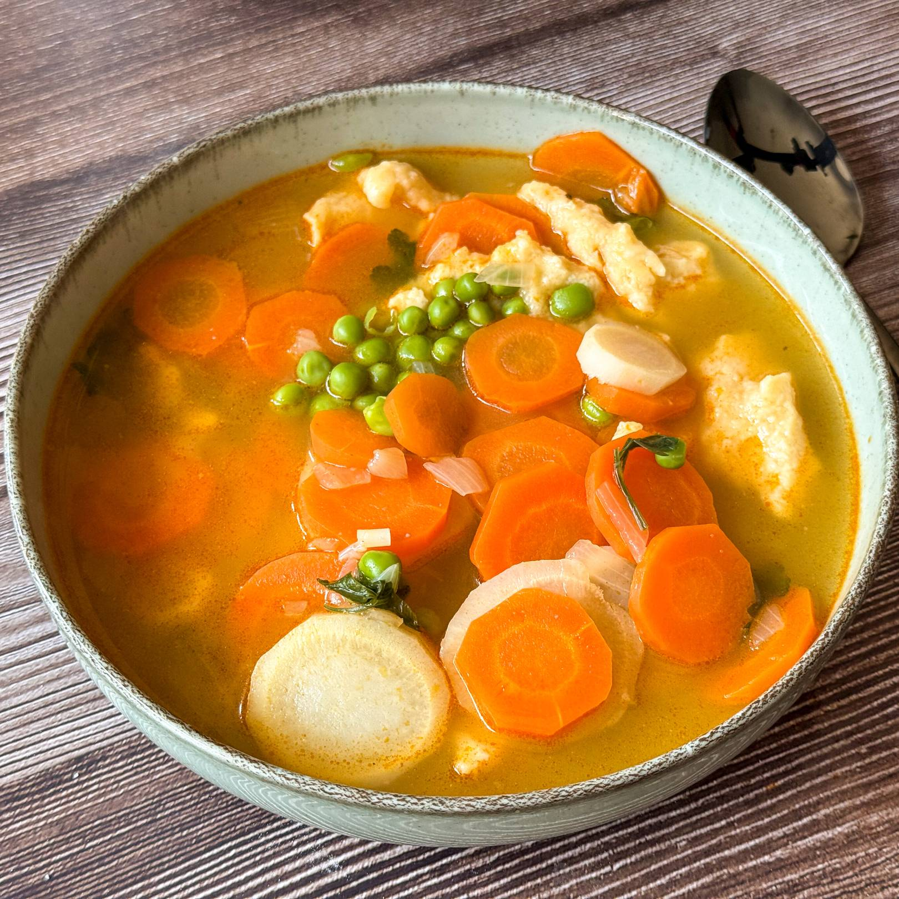

Green pea soup

Description
A green pea soup with carrot and spatzle
Ingredients
- 4 l water
- 1 kg green peas
- 2 carrots
- 300 g spatzle
- 4 tbsp sunflower oil
- 1 tbsp wheat flour
- 2 tbsp sugar
- 0,5 tbsp salt
- 0,5 tbsp red pepper
- 1 g parsley
Steps
- Warming up the sunflower oil
- Roasting carrots for 2-3 minutes
- Adding water, green peas, wheat flour, red pepper, salt and sugar -- cooking them for 30 minutes
- Adding spatzle (2 eggs + 250 g whole flour + 0,5 tbsp salt + 0,5 glass of water mixed up) and parsley -- cooking them for 45 minutes
Back to Odin Recipes